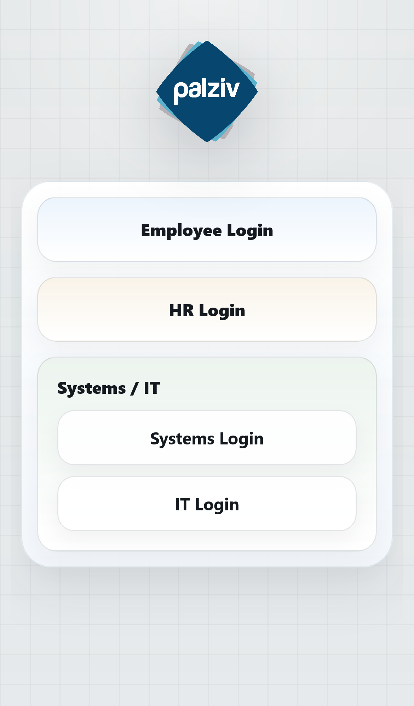
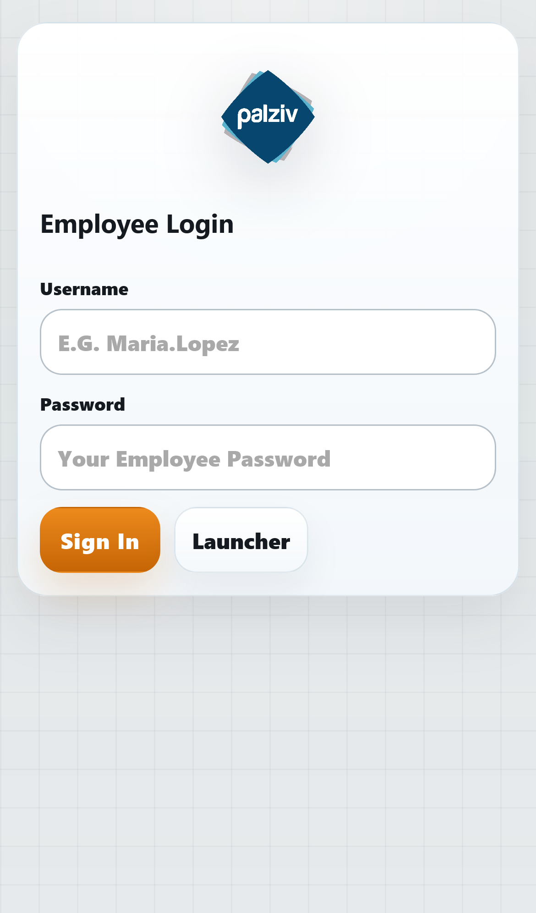
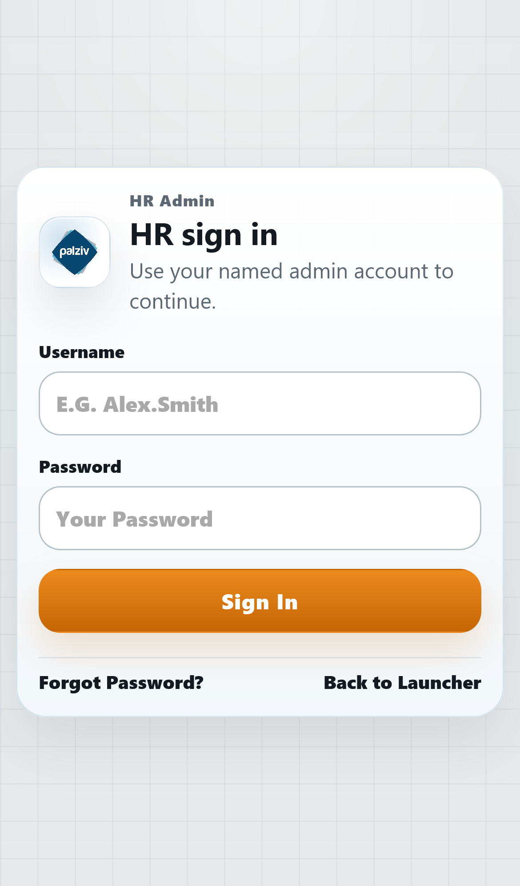
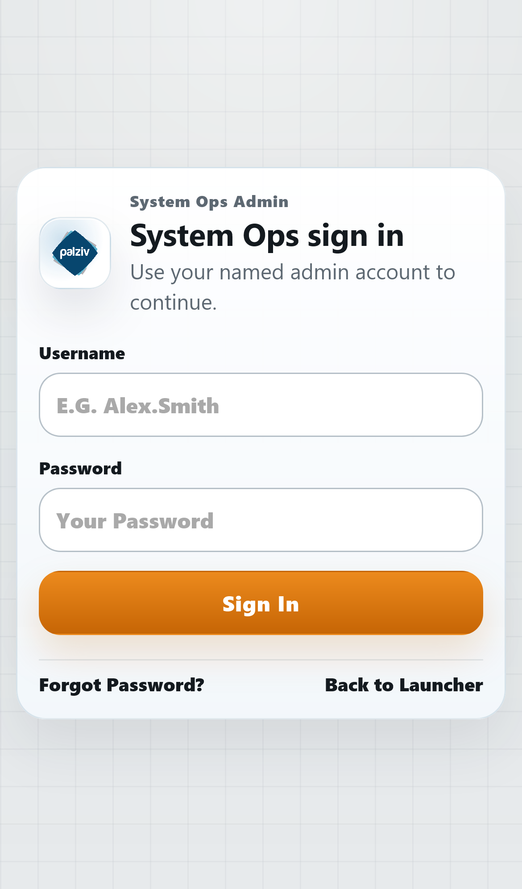
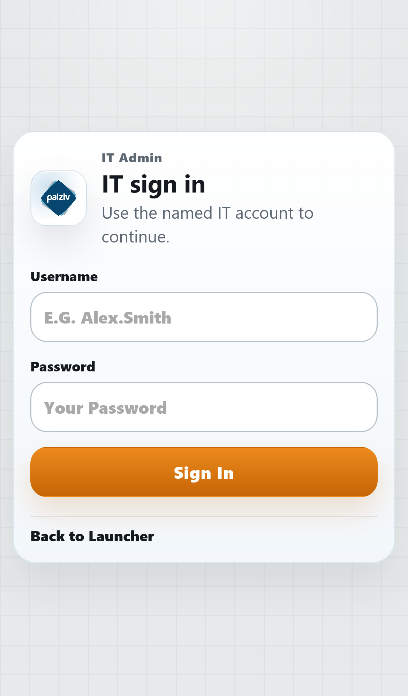

Palziv Portal
Professional User Manual
Generated: June 23, 2026 11:37:46
This manual explains core workflows for Employees, HR admins, Systems operators, and IT governance admins.
Quick navigation
- Employee onboarding and feed usage
- HR publishing and employee management
- Systems monitoring and recovery tasks
- IT governance and recovery oversight
- Operational checks and troubleshooting
Palziv Portal User Manual
1. Purpose
Palziv Portal is a secure, installable employee communication application with four operational surfaces:
- Employee portal for updates, alerts, acknowledgements, and weather.
- HR portal for publishing notices and managing employees.
- Systems portal for operational settings, monitoring, and technical administration.
- IT portal for governance, recovery oversight, and administrative account control.
This manual is intended for non-technical operators, administrators, and support staff.
2. System Access and Roles
2.1 Routes
- Launcher:
https://<your-host>/palzivalerts - Employee portal:
https://<your-host>/palzivalerts/employee - HR portal:
https://<your-host>/palzivalerts/hr - Systems portal:
https://<your-host>/palzivalerts/webmaster - IT portal:
https://<your-host>/palzivalerts/it
Notes:
- Legacy routes (
/employee, /hr, /webmaster, /admin) redirect to the branded /palzivalerts paths. - Public pages are only accessible after authentication.
2.2 User Roles
| Role | Purpose | Typical Action |
| Employee | Read only | View posts, save/weather, acknowledge notices |
| HR Admin | HR | Publish updates, add/edit employees, manage HR admin users |
| Systems | Operations | Run health checks, manage diagnostics, recover services |
| IT | Governance | Account structure, critical recovery, policy and audit oversight |
2.3 Authentication Best Practices
- Use named accounts only (do not create shared "admin" credentials).
- Use strong unique passwords.
- Rotate admin recovery tokens if there is any security concern.
- Log in only over HTTPS.
3. How to Use the Employee Portal
3.1 First Time Setup on Phone
- Open the employee URL in Chrome or Safari.
- Sign in with your employee credentials.
- Tap Enable alerts when prompted if push notifications are supported.
- Optional: install to home screen (Add to Home Screen).
3.2 Everyday Use
- Feed: shows active notices in reverse chronological order.
- Weather card: managed by HR; shows latest saved location forecast.
- Acknowledge important posts: tap acknowledgement controls where required.
- Offline behavior: app shell works offline; latest content syncs when connection returns.
3.3 Push Notifications
- Employees receive alerts only after permission is granted and service worker registration succeeds.
- If alerts do not appear, verify browser support and notification permissions in device settings.
4. How to Use the HR Portal
4.1 Sign In
- Open HR URL.
- Sign in with your HR admin credentials.
- You will see the publishing and employee management dashboard.
4.2 Publish an Update
- Create a post with title and content.
- Select severity and urgency options if applicable.
- Choose publish target (employee feed / alert / both).
- Save and confirm delivery.
4.3 Manage Employees
- Add employee accounts with unique usernames.
- Update account details as people join or leave.
- Deactivate users when roles change or employment ends.
4.4 HR Operational Checklist
- Post at least one test post at start of day during operational changes.
- Verify new posts appear in employee view immediately.
- Keep critical alerts concise and avoid duplicate urgent messages.
5. How to Use the Systems Portal
5.1 Sign In
- Open Systems URL.
- Log in with Systems credentials.
- Confirm service dashboard and health status.
5.2 Health Monitoring
Run or verify:
- Employee route returns 200.
- HR and Systems routes load successfully.
- API health endpoint is healthy.
- Logs are writing and rotating normally.
5.3 Recovery Tasks
- If login or public route issues occur, start with
health-check and service status checks. - Restart the app only through established runbook procedures.
- Use backup/restore only with a fresh backup taken first.
6. IT Governance Role (When Enabled)
- Manage governance:
- Named admin account control and recovery.
- Audit and security event access.
- High-level company operations and governance settings.
- IT actions should be limited to control-plane administration, not daily posting.
7. Install, Deploy, and Run
7.1 Local Development
- Install dependencies:
npm install - Start app:
npm start - Open the routes in section 2.1.
7.2 Production (Windows + Cloudflare Tunnel)
- Run the app on port
3116. - Use the provided startup and tunnel scripts to enable automatic recovery.
- Ensure
PUBLIC_BASE_URL is set correctly before startup. - Keep scheduled tasks and cloudflared service monitoring active.
7.3 Required Environment Variables
PUBLIC_BASE_URLTRUST_PROXY_ADDRESSESSITE_NAME, SITE_SHORT_NAME (branding)SITE_SUBTITLE (branding)- Recovery tokens as configured for your operational model.
8. Backup and Recovery
8.1 Backup Frequency
- Before each release.
- At minimum once per day.
8.2 Restore Process
- Stop updates in progress.
- Take a new backup.
- Restore from selected timestamped archive.
- Restart with runbook commands.
- Run health checks before users resume normal operations.
8.3 Recovery Rules
- Never restore over live data without a fresh backup.
- Never restore from unknown or modified archives.
- Validate URL and proxy settings after restore.
9. Security and Compliance
- Use unique user credentials and strong passwords.
- Limit shared device usage.
- Keep admin credentials out of chat, screenshots, and source control.
- Enable alerting for repeated failed logins and lockout events.
- Rotate credentials after role changes and employee departures.
10. Troubleshooting
10.1 Employees Cannot Sign In
- Confirm credentials and account status.
- Check if account is disabled or password changed.
- Verify you are on the correct branded portal route.
10.2 Push Alerts Not Arriving
- Confirm browser supports notifications and service workers.
- Ensure HTTPS is active.
- Confirm the employee completed registration on the device.
10.3 Missing Updates
- Refresh from a stable connection.
- Check app version and network.
- Verify HR publication status and expiry rules.
10.4 Portal Fails to Load
- Confirm server/host is running.
- Verify health checks for
/api/health. - Check runtime logs for startup or proxy errors.
10.5 Escalation
- If issue persists beyond 15 minutes during work hours, escalate to the operations lead.
- Provide:
- time range
- username/role involved
- browser/device
- exact error text
11. Logging and Support
11.1 What to include in support requests
- User account and role.
- Time window of issue.
- Repro steps.
- Screenshots (without credentials).
- Error codes/messages.
11.2 Expected Standard
- Confirm healthy access for employee, HR, and Systems routes.
- Confirm successful login and API health before deeper diagnosis.
12. Versioning and Stewardship
- Keep this manual updated with every release and role/process change.
- Store it with the deployment package so operators and admins can access the same document.
- Review monthly for role changes, recovery procedures, and security updates.
Appendix: Screenshots
Use these for quick recognition and training handoff.
Launcher page (/palzivalerts)

Employee login and feed view (/palzivalerts/employee)

HR console login and publishing screen (/palzivalerts/hr)

Systems console login and diagnostics (/palzivalerts/webmaster)

IT control center and governance screen (/palzivalerts/it)
